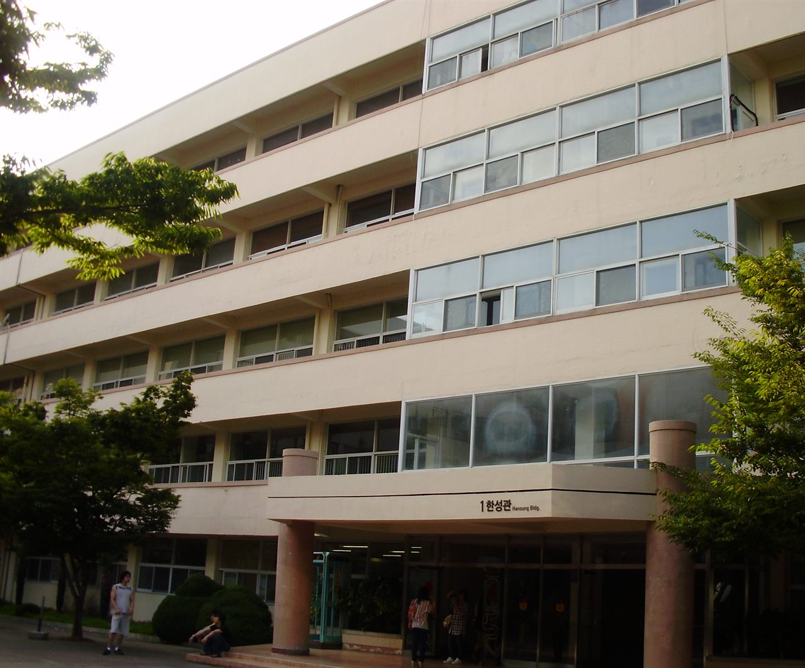

경성대학교는 1955년에 세워진 사립대학으로, 캠퍼스는 부산광역시 남구 대연동에 있습니다. 부산도시철도 2호선 ‘경성대·부경대역’ 바로 위에 있는 역세권 캠퍼스이고, 역 이름에 대학 이름이 들어가 있을 만큼 그 일대의 중심입니다. 교육부의 글로컬대학30에 선정된 대학이기도 합니다.
2027학년도 수시 원서접수는 2026년 9월 7일부터 11일까지 진행돼 이미 마감됐습니다. 경쟁률도 발표됐습니다. 6.07대 1, 지원자가 1만 5천 명을 넘겼습니다. 그래서 오늘 이 글을 읽으실 분은 대부분 고1·고2 학부모님이실 것입니다. 지금 보실 것은 경쟁률 숫자가 아니라 이 대학의 문이 어느 쪽으로 열려 있는지입니다. 경성대는 그 방향이 올해 꽤 또렷하게 바뀌었습니다.
수시로 93.1%를 뽑습니다 — 정시 문이 거의 없습니다
숫자부터 보겠습니다. 경성대는 2027학년도에 정원 내 기준으로 수시에서 2,579명(93.1%), 정시에서 192명(6.9%)을 모집합니다. 합쳐서 2,771명입니다.
이 비율은 한 번 더 읽어 보셔야 합니다. 정시로 열리는 자리가 스무 명 중 한 명을 조금 넘는 수준입니다. 이 대학을 목표로 둔다면 사실상 수시 하나로 간다고 보셔야 하고, “내신이 아쉬우니 정시로 뒤집겠다”는 전략은 여기서 통하기 어렵습니다.
고1·고2 가정에 이 숫자가 주는 지침은 단순합니다. 학교에서 받는 내신과 생활기록부가 거의 전부라는 것입니다. 수능 공부를 하지 말라는 뜻이 아니라, 둘 중 무엇이 먼저인지를 헷갈리지 말라는 뜻입니다.
전형은 크게 세 갈래로 나눠서 보세요
전형 이름이 여럿이라 막막하게 들리는데, 무엇으로 뽑느냐로 묶으면 세 갈래입니다.
- 학생부교과 — 내신 성적으로 뽑는 자리입니다. 가장 큽니다. 일반계고교과전형, 지역인재전형, 특성화고교과전형, 사회배려대상자전형, 농어촌전형, 저소득층전형이 여기에 들어갑니다. 전형 방법은 학생부 교과 100% 일괄합산입니다.
- 학생부종합 — 생활기록부 전체를 읽어서 뽑는 자리입니다. 학교생활우수자전형이 대표 전형이고, 2027학년도에는 지역인재Ⅱ가 함께 운영됩니다.
- 실기·실적 — 실기특별전형과 체육특기자전형입니다. 경성대는 예체능 쪽 모집 규모가 작지 않은 대학이라 이 갈래가 꽤 큽니다.
정원 내 학생부교과 쪽만 따로 보면 약 1,774명입니다. 세부적으로는 일반계고교과 878명, 지역인재 650명, 특성화고교과 187명, 사회배려대상자 55명, 지역인재(저소득층) 4명으로 발표됐습니다. 수시 2,579명 가운데 3분의 2 이상이 내신으로 열리는 자리라는 뜻입니다.
올해 가장 크게 바뀐 자리 — 지역인재 650명
이 글에서 딱 하나만 기억하신다면 이 대목입니다. 학생부교과 지역인재 전형이 650명 규모로 크게 늘었습니다. 직전 학년도의 수십 명 수준과 비교하면 자릿수가 달라진 변화입니다.
지역인재 전형은 해당 권역의 고등학교를 다닌 학생에게 따로 열어 두는 문입니다. 경성대의 경우 부산·울산·경남 권역이 해당합니다. 같은 성적이어도 전국에서 몰리는 일반 전형보다 경쟁 범위가 좁아지기 때문에, 부산·울산·경남에서 고등학교를 다니는 학생에게는 지금 가장 유리해진 통로입니다.
자격에서 꼭 확인하셔야 할 것이 있습니다. 2027학년도 지역인재 전형은 해당 지역 고등학교에서 전 교육과정(3년)을 이수해야 하는 요건으로 운영됩니다. 중학교 과정까지 거슬러 올라가 거주를 보는 강화된 기준은 2028학년도부터 적용되는 이야기입니다. 지금 중3·고1 가정이라면 고등학교를 어디로 가느냐가 이 전형의 자격을 좌우한다는 점을 미리 알고 계셔야 합니다.
성적을 보는 방식도 바뀌었습니다. 2027학년도 지역인재 전형은 국어·수학·영어·탐구 교과에서 상위 10개 과목을 반영하는 방식으로 조정됐습니다. 예전처럼 교과군마다 정해진 과목 수를 채우는 방식과 달라서, 잘 나온 과목이 그대로 쓰이는 구조에 가깝습니다. 고1·고2라면 “전 과목을 고르게”보다 주요 교과에서 상위 과목을 확실히 만들어 두는 쪽이 이 전형에는 더 잘 맞습니다.
면접이 없습니다 — 서류 하나로 끝난다는 뜻
학생부종합 학교생활우수자전형은 학생부 100% 종합평가이고, 면접을 보지 않습니다. 수능최저학력기준도 적용되지 않습니다. 2027학년도 기준으로 경성대 학종에는 면접을 치르는 전형이 없습니다.
면접이 없다는 말은 편하게 들리지만, 실제로는 부담이 앞으로 당겨진다는 뜻입니다. 면접이 있으면 서류가 조금 약해도 만나서 설명할 기회가 있는데, 서류 100%는 그 기회가 없습니다. 생활기록부에 적힌 글자가 전부입니다.
그래서 고1·고2가 지금 해야 할 일이 분명해집니다. 3학년 때 몰아서 채울 수 있는 서류가 아닙니다. 학년마다 수업 중에 한 활동이 기록으로 남게 하는 것, 과목별 세부능력 및 특기사항에 쓸 내용이 생기도록 수행평가와 발표를 허투루 넘기지 않는 것. 이 두 가지가 면접 없는 대학을 준비하는 방법입니다.
수능최저는 어디에 걸리나
경성대는 대부분의 전형에 수능최저학력기준이 없습니다. 학교생활우수자전형도, 특성화고교과전형과 사회배려대상자전형도 적용하지 않습니다.
수능최저가 걸리는 곳은 약학과를 비롯한 일부 모집단위입니다. 올해 수시에서 경쟁률이 가장 높았던 자리도 여기였습니다. 약학과 지역인재Ⅱ 전형은 5명 모집에 114명이 지원해 22.8대 1을 기록했습니다. 모집 인원이 적고 수능최저까지 걸리는데도 지원이 몰린다는 것은, 그만큼 이 권역에서 약학 계열 수요가 크다는 뜻입니다.
여기서 고1·고2 가정이 가져가실 판단은 이렇습니다. 경성대를 일반 학과로 목표한다면 수능최저 걱정보다 내신과 생활기록부가 먼저입니다. 반대로 약학·보건 계열을 본다면 내신과 수능을 처음부터 같이 끌고 가야 합니다. 같은 대학 안에서도 준비 방식이 완전히 갈립니다.
MEGA학부 신설, 자율전공학부 폐지
모집 단위 쪽에도 변화가 있습니다. 2027학년도에 MEGA학부가 새로 생겼습니다. 전체 60명 규모이고 그중 57명을 수시로 뽑습니다. 안에 들어가는 분야는 웹툰, 음악테크놀로지, 공연기획, 게임콘텐츠, K뷰티스타일링입니다. 이름만 봐도 전공 구성이 짐작되실 텐데, 콘텐츠·문화산업 쪽으로 모아 놓은 학부입니다.
반대로 전공자율선택(자율전공학부)은 폐지됐습니다. 많은 대학이 자율전공 정원을 늘리는 흐름과는 반대 방향이라 눈에 띄는 선택입니다. 또 약학과에 지역인재Ⅱ 모집 단위가 5명 규모로 새로 생겼습니다.
예체능이나 콘텐츠 쪽에 관심이 있는 아이라면 MEGA학부는 눈여겨볼 만합니다. 다만 이런 모집 단위는 대부분 실기 또는 포트폴리오가 들어가기 때문에, 고1·고2부터 준비 기간을 길게 잡아야 합니다. 모집 단위가 신설되는 해에는 전형 방법과 실기 과제가 전년과 다를 수 있으니 반드시 모집요강 원문에서 확인하셔야 합니다.
지원 전에 꼭 확인할 다섯 가지
- 내가 지역인재 자격이 되는가. 고등학교를 부산·울산·경남에서 전 과정 다녔는지부터 봅니다. 650명이 열려 있어도 자격이 안 되면 없는 문입니다.
- 교과로 갈지 종합으로 갈지. 내신 숫자가 강하면 교과, 수업 안에서 한 활동이 기록으로 남아 있으면 종합입니다. 둘 다 애매하면 생활기록부를 먼저 채우는 쪽이 낫습니다.
- 지망 학과에 수능최저가 걸리는가. 약학·보건 계열인지 아닌지에 따라 2년 치 공부 계획이 달라집니다.
- 반영되는 과목이 무엇인가. 지역인재는 국·수·영·탐 상위 10과목 방식입니다. 반영 교과와 과목 수는 전형마다 다르니 내 전형 기준으로 확인하셔야 합니다.
- 신설·폐지된 모집 단위인가. MEGA학부처럼 올해 처음 생긴 곳은 참고할 지난 자료가 없습니다. 전년 경쟁률이나 입결을 그대로 믿으시면 안 됩니다.
마무리 — 결국 고1·고2에 할 일은 같습니다
경성대의 2027학년도 수시를 한 문장으로 줄이면 이렇습니다. “정시 문은 거의 닫혀 있고, 내신으로 열리는 자리를 크게 늘렸으며, 그 안에서도 부산·울산·경남 학생에게 문을 가장 넓게 열었다.”
그래서 지금 고1·고2가 할 일은 특별하지 않습니다. 학교 시험을 끝까지 챙기고, 수업 안에서 한 것이 기록으로 남게 하고, 지망 계열에 수능최저가 걸리는지만 일찍 확인해 두는 것입니다. 이 셋은 경성대만이 아니라 수시로 가는 거의 모든 대학에서 똑같이 쓰입니다.
와와 학습코칭센터에서는 아이의 학년과 성적 흐름에 맞춰 목표 대학과 전형을 함께 정리해 드립니다. 교과로 갈지 종합으로 갈지, 지역인재를 쓸 수 있는지부터 막막하시다면 가까운 센터에서 상담을 신청해 보세요.
※ 본 글은 경성대학교 2027학년도 수시모집 관련 언론 보도와 공개 자료를 바탕으로 정리했습니다. 인용한 모집 인원·비율·경쟁률·일정과 전형 변화는 보도 시점에 발표된 내용입니다. 모집단위별 세부 모집 인원, 학생부종합 전형의 정확한 모집 규모, 교과 성적 반영 교과·과목과 등급 환산 방식, 진로선택과목 반영 방법, 지역인재와 지역인재Ⅱ의 차이와 세부 지원 자격, 수능최저가 적용되는 모집단위 전체 목록과 등급 합 기준·탐구 반영 방식·한국사 기준, MEGA학부의 전공별 선발 방법과 실기 과제, 실기특별전형의 종목별 기준, 전형별·학과별 경쟁률 세부 내역과 입시 결과, 장학금 제도는 확인하지 못해 이 글에 담지 않았습니다. 확인되지 않은 숫자와 기준은 기재하지 않았습니다. 사진은 경성대학교 한성관을 촬영한 것으로 촬영 시점이 오래되어 현재 모습과 다를 수 있습니다. 세부 사항은 모집요강에서 확정되며 변경될 수 있으므로, 반드시 경성대학교 입학처의 2027학년도 수시모집요강 원문에서 본인 지원 모집단위 기준으로 최종 확인하시기 바랍니다.